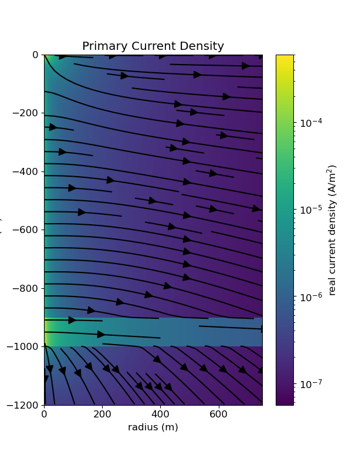
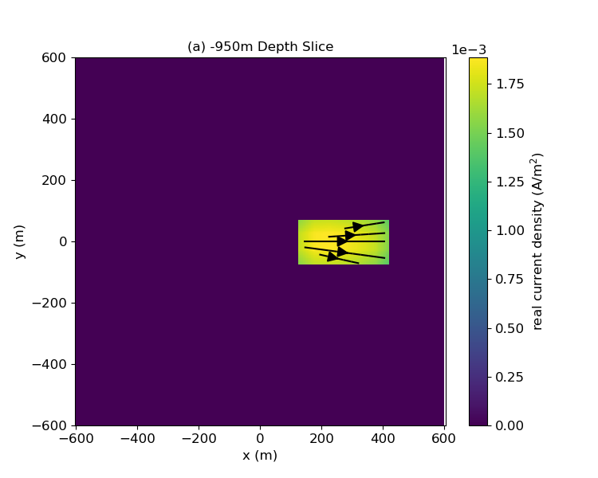
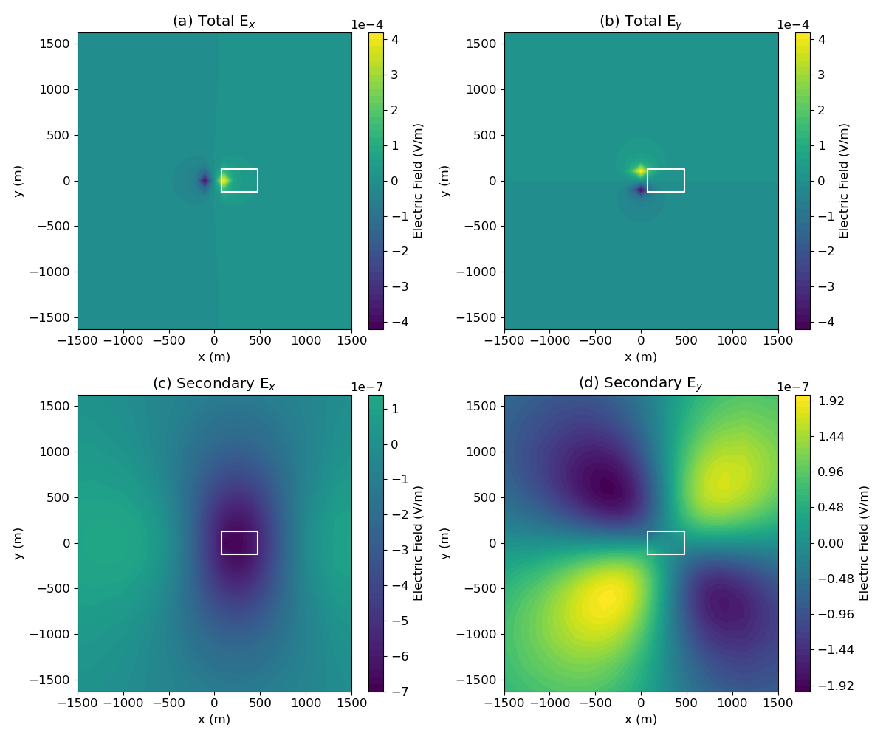
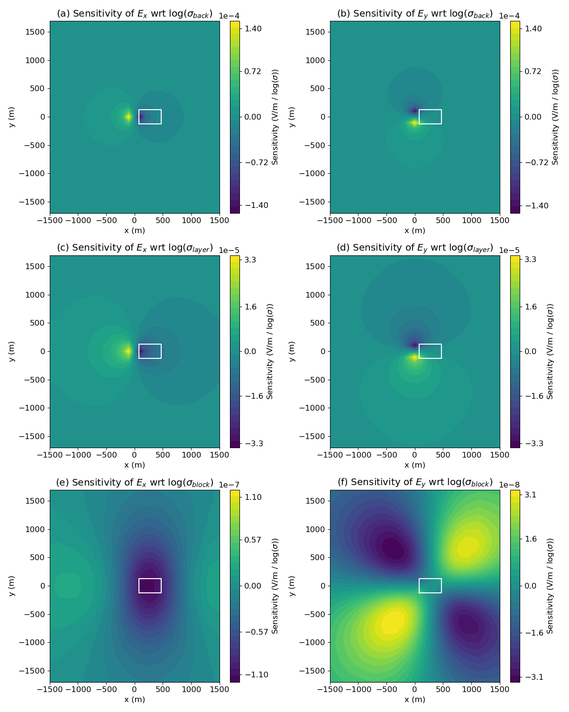
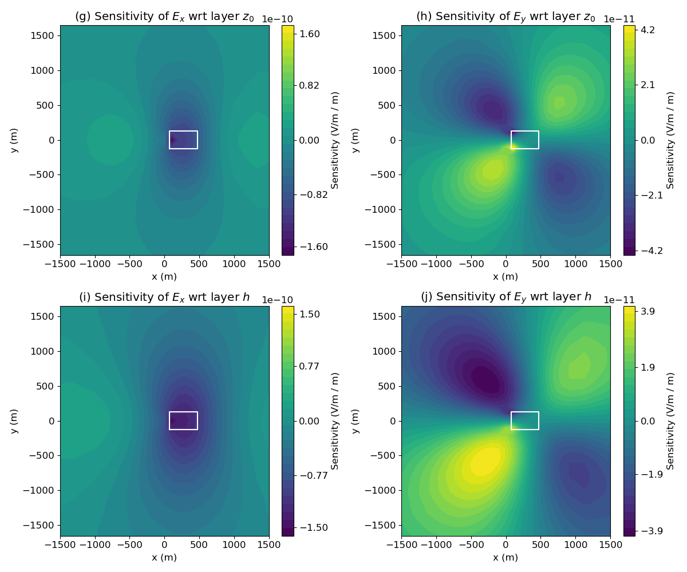
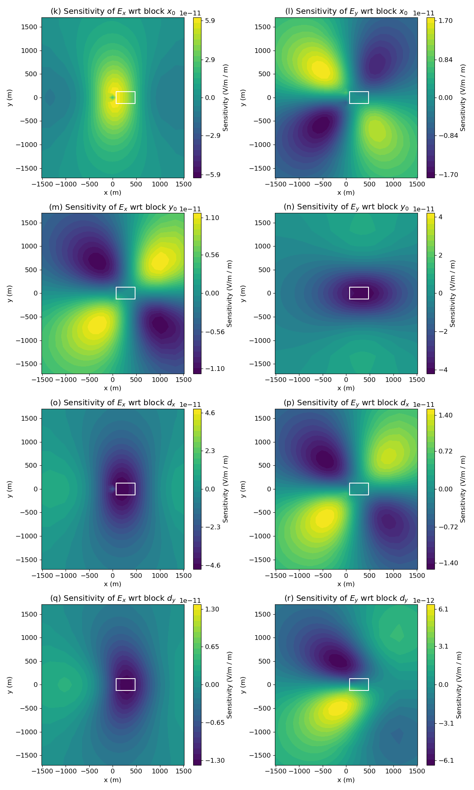

Note
Go to the end to download the full example code
Heagy et al., 2017 Casing Example#
Here, we use a primary-secondary approach to compute the sensitivity of an EM survey with respect to a parametric model of a block in a layered space.
If you run this example with reRun=False, stored results for the
sensitivity will be downloaded and plotted. Otherwise, if reRun=True, the
example will be re-run. Note that you will need modest computational resources
to re-compute the sensitivity (it is a 3D EM problem!).
There are 6 plots that are produced. Figure 1 shows the primary current density (the current density due to the source, casing and layered background), Figure 2 shows the secondary source - the source current density due to the 3D conductivity structure present only in the secondary problem. Figure 3 shows the predicted data. Figures 4-6 show the sensitivity with respect to each of the 9 model parameters (the conductivity of the background, layer and block, the thickness of the layer and the x and y extents of the block).
This example is used in the paper
Lindsey J. Heagy, Rowan Cockett, Seogi Kang, Gudni K. Rosenkjaer, Douglas W. Oldenburg, A framework for simulation and inversion in electromagnetics, Computers & Geosciences, Volume 107, 2017, Pages 1-19, ISSN 0098-3004, http://dx.doi.org/10.1016/j.cageo.2017.06.018.
This example is available on figshare: https://doi.org/10.6084/m9.figshare.5036123
This example was updated for SimPEG 0.14.0 on January 31st, 2020 by Joseph Capriotti
- 
- 
- 
- 
- 
- 
Skin Depth: [7071.067811865475]
Downloading https://storage.googleapis.com/simpeg/papers/Heagyetal2016/Heagyetal2016Casing.hdf5
saved to: /home/vsts/Downloads/simpegtemp/Heagyetal2016Casing.hdf5
Download completed!
Getting Primary Problem
/home/vsts/work/1/s/examples/20-published/plot_heagyetal2017_casing.py:187: DeprecationWarning:
`np.int` is a deprecated alias for the builtin `int`. To silence this warning, use `int` by itself. Doing this will not modify any behavior and is safe. When replacing `np.int`, you may wish to use e.g. `np.int64` or `np.int32` to specify the precision. If you wish to review your current use, check the release note link for additional information.
Deprecated in NumPy 1.20; for more details and guidance: https://numpy.org/devdocs/release/1.20.0-notes.html#deprecations
Cyl Mesh Extent xmax: 88864.16819654894,: zmin: -289135.34091688367, zmax: 288135.8409168833
Building primary mapping
... done building primary mapping
... done building primary problem
Setting up primary survey
... done building primary survey
building secondary mapping
Secondary Mesh ...
xmin, xmax, zmin, zmax: -16593.292236328125 16593.292236328125 -16593.292236328125 16593.292236328125 -19170.57876586914 18170.57876586914
nC, vnC 137700 (45, 45, 68)
... done building secondary mapping
Setting up Secondary Problem
... done setting up secondary problem
Building primaryMap2meshs
... done building primaryMap2meshs
Setting up Secondary Survey
... done secondary survey
Setting up Secondary Survey
... done secondary survey
Removing /home/vsts/Downloads/simpegtemp
import discretize
from SimPEG import utils, maps, tests
from SimPEG.electromagnetics import frequency_domain as FDEM, mu_0
from SimPEG.utils.io_utils import download
# try:
# from pymatsolver import MumpsSolver as Solver
# print('using MumpsSolver')
# except ImportError:
try:
from pymatsolver import Pardiso as Solver
except ImportError:
from SimPEG import SolverLU as Solver
import numpy as np
import scipy.sparse as sp
import time
import os
import matplotlib.pyplot as plt
from matplotlib.colors import LogNorm
from matplotlib import rcParams
import h5py
np.random.seed(42)
fontsize = 12
rcParams["font.size"] = fontsize
class PrimSecCasingExample(object):
NAME = "PrimSec_5e6Casing_50Mu_05Hz_LargeCondBody"
# -------------- SETUP MODEL PARAMS ---------------------------- #
sigmaair = 1e-8 # air
sigmaback = 1e-2 # background
sigmacasing = 5.5e6 # casing
sigmainside = 1 # inside the casing
mucasing = 50 # casing permeability
casing_l = 1000 # length of the casing
casing_d = 10e-2 # 10cm diameter casing
casing_t = 1e-2 # 1cm thickness
# layer
sigmalayer = 1.0 / 10.0
layer_z = np.r_[-1000.0, -900.0]
# 3D body
sigmablock = 2.0
block_x = np.r_[75.0, 475.0]
block_y = np.r_[-125, 125.0]
block_z = layer_z
# Survey Params
freqs = np.r_[0.5] # frequencies 0.5
dsz = -950.0 # down-hole z source location
src_a = np.r_[0.0, 0.0, dsz]
src_b = np.r_[1e4, 0.0, 0.0] # return electrode is a ring, 200
def __init__(self):
# translate casing parameters to radial distances to outer casing wall,
# inner casing wall, and casing length to z locations
self.casing_r = self.casing_d / 2.0
self.casing_a = self.casing_r - self.casing_t / 2.0 # inner radius
self.casing_b = self.casing_r + self.casing_t / 2.0 # outer radius
self.casing_z = np.r_[-self.casing_l, 0.0]
# Display skin depth so we can ensure our mesh goes further.
print(
"\nSkin Depth: {}".format(
[(500.0 / np.sqrt(self.sigmaback * _)) for _ in self.freqs]
)
)
# -------------- Model --------------------------------- #
@property
def mtrue(self):
# This is the model we are using to compute the sensitivity. Each of
# these parameters would be considered unknown in an inversion. This
# model is of a parametrized block in a layer
#
# +--------------------------------------+
# | |
# | |
# | background |
# | |
# | |
# +--------------------+-------+---------+
# | | | |
# | layer | block | |
# | | | |
# +--------------------+-------+---------+
# | |
# | |
# | background |
# | |
# | |
# +--------------------------------------+
return np.hstack(
np.r_[
np.log(self.sigmaback), # value in background
np.log(self.sigmalayer), # value in the layer
np.log(self.sigmablock), # value in the block
self.layer_z.mean(), # layer center
self.layer_z[1] - self.layer_z[0], # layer thickness
self.block_x.mean(), # block x_0
self.block_y.mean(), # block y_0
self.block_x[1] - self.block_x[0], # block dx
self.block_y[1] - self.block_y[0], # block dy
]
)
# ----------------------------------------------------------------- #
# -------------- PRIMARY PROBLEM SETUP ---------------------------- #
# ----------------------------------------------------------------- #
@property
def meshp(self):
if getattr(self, "_meshp", None) is None:
# -------------- Mesh Parameters ------------------ #
# x-direction
csx1, csx2 = 2.5e-3, 25.0 # fine cells near well bore
pfx1, pfx2 = 1.3, 1.4 # padding factors: fine -> uniform
ncx1 = np.ceil(self.casing_b / csx1 + 2) # number of fine cells
# (past casing wall)
dx2 = 1000.0 # uniform mesh out to here
npadx2 = 21 # padding out to infinity
# z-direction
csz = 0.05 # finest z-cells
nza = 10 # number of fine cells above air-earth interface
pfz = pfx2 # padding factor in z-direction
# ------------- Assemble the Cyl Mesh ------------- #
# pad nicely to second cell size
npadx1 = np.floor(np.log(csx2 / csx1) / np.log(pfx1))
hx1a = utils.unpack_widths([(csx1, ncx1)])
hx1b = utils.unpack_widths([(csx1, npadx1, pfx1)])
dx1 = sum(hx1a) + sum(hx1b)
dx1 = np.floor(dx1 / csx2)
hx1b *= (dx1 * csx2 - sum(hx1a)) / sum(hx1b)
# second chunk of mesh
ncx2 = np.ceil((dx2 - dx1) / csx2)
hx2a = utils.unpack_widths([(csx2, ncx2)])
hx2b = utils.unpack_widths([(csx2, npadx2, pfx2)])
hx = np.hstack([hx1a, hx1b, hx2a, hx2b])
# cell size, number of core cells, number of padding cells in the
# x-direction
ncz = np.int(np.ceil(np.diff(self.casing_z)[0] / csz)) + 10
npadzu, npadzd = 43, 43
# vector of cell widths in the z-direction
hz = utils.unpack_widths(
[(csz, npadzd, -pfz), (csz, ncz), (csz, npadzu, pfz)]
)
# primary mesh
self._meshp = discretize.CylindricalMesh(
[hx, 1.0, hz], [0.0, 0.0, -np.sum(hz[: npadzu + ncz - nza])]
)
print(
"Cyl Mesh Extent xmax: {},: zmin: {}, zmax: {}".format(
self._meshp.cell_centers_x.max(),
self._meshp.cell_centers_z.min(),
self._meshp.cell_centers_z.max(),
)
)
return self._meshp
@property
def indActivePrimary(self):
return self.meshp.gridCC[:, 2] <= 0.0 # air cells
@property
def projectionMapPrimary(self):
return maps.Projection(nP=9, index=np.r_[0, 1, 3, 4])
@property
def primaryMapping(self):
# Setup Pimary Maps:
# we want to simulate on a physical property model that
# consists of casing in a layered background. Air cells are included.
# Our "model", that we are considering when computing the sensitivity,
# consists of the layered background and block, so the casing and air
# cells are inactive parts of the model and need to be appropriately
# injected during the construction of the primary model
if getattr(self, "_primaryMapping", None) is None:
print("Building primary mapping")
# inject parameters we want to invert for into the full casing
# model
valInactive = np.r_[
np.log(self.sigmacasing), # log conductivity of the casing
np.log(self.sigmainside), # log conductivity fluid inside
# casing
self.casing_r, # radius of the casing (to its center)
self.casing_t, # casing thickness
self.casing_z[0], # bottom of casing (at depth)
self.casing_z[1], # top of casing (at surface)
]
# inject casing parameters so they are included in the construction
# of the layered background + casing
injectCasingParams = maps.InjectActiveCells(
None, indActive=np.r_[0, 1, 4, 5], valInactive=valInactive, nC=10
)
# maps a list of casing parameters to the cyl mesh (below the
# subsurface)
paramMapPrimary = maps.ParametricCasingAndLayer(
self.meshp, indActive=self.indActivePrimary, slopeFact=1e4
)
# inject air cells
injActMapPrimary = maps.InjectActiveCells(
self.meshp, self.indActivePrimary, np.log(self.sigmaair)
)
# map from log conductivity to conductivity
expMapPrimary = maps.ExpMap(self.meshp)
# assemble the primary mapping
primaryMapping = (
expMapPrimary
* injActMapPrimary # log(sigma) --> sigma
* paramMapPrimary # log(sigma) below surface --> include air
* injectCasingParams # parametric --> casing + layered earth
* # parametric layered earth --> parametric
# layered earth + casing
self.projectionMapPrimary # grab relevant parameters from full
# model (eg. ignore block)
)
self._paramMapPrimary = paramMapPrimary
self._primaryMapping = primaryMapping
print("... done building primary mapping")
return self._primaryMapping
@property
def muModel(self):
# Mu Model
# here, we want to consider variable magnetic permeability in the
# simulation. The only permeable item in the domain is the casing.
if getattr(self, "_muModel", None) is None:
if getattr(self, "_paramMapPrimary", None) is None:
self.primaryMapping
muMap = (
maps.InjectActiveCells(self.meshp, self.indActivePrimary, mu_0)
* self._paramMapPrimary
)
muModel = muMap * np.hstack(
np.r_[
mu_0, # val Background
mu_0, # val Layer
mu_0 * self.mucasing, # val Casing
mu_0, # val inside Casing
self.layer_z.mean(), # layer center
self.layer_z[1] - self.layer_z[0], # layer thickness
self.casing_r, # casing radius
self.casing_t, # casing thickness
self.casing_z[0], # casing bottom
self.casing_z[1], # casing top
]
)
self._muModel = muModel
return self._muModel
@property
def primaryProblem(self):
if getattr(self, "_primaryProblem", None) is None:
# define a custom prop map to include variable mu that we are not
# inverting for - This will change when we improve the propmap!
print("Getting Primary Problem")
# class CasingEMPropMap(maps.PropMap):
# sigma = maps.Property(
# "Electrical Conductivity", defaultInvProp=True,
# propertyLink=('rho', maps.ReciprocalMap)
# )
# mu = maps.Property(
# "Inverse Magnetic Permeability",
# defaultVal=self.muModel,
# propertyLink=('mui', maps.ReciprocalMap)
# )
# rho = maps.Property(
# "Electrical Resistivity",
# propertyLink=('sigma', maps.ReciprocalMap)
# )
# mui = maps.Property(
# "Inverse Magnetic Permeability",
# defaultVal=1./self.muModel,
# propertyLink=('mu', maps.ReciprocalMap)
# )
# # set the problem's propmap
# FDEM.Simulation3DMagneticField.PropMap = CasingEMPropMap
# use H-J formulation for source with vertical current density and
# cylindrical symmetry (h faster on cyl --> less edges than faces)
primaryProblem = FDEM.Simulation3DMagneticField(
self.meshp, sigmaMap=self.primaryMapping
)
primaryProblem.mu = self.muModel
primaryProblem.solver = Solver
self._primaryProblem = primaryProblem
print("... done building primary problem")
return self._primaryProblem
@property
def primarySurvey(self):
if getattr(self, "_primarySurvey", None) is None:
print("Setting up primary survey")
def setupPrimarySource(plotIt=False):
# Construct a downhole source that is coupled to the casing
meshp = self.meshp
src_a = self.src_a
src_b = self.src_b
casing_a = self.casing_a
# downhole source
dg_x = np.zeros(meshp.vnF[0], dtype=complex)
dg_y = np.zeros(meshp.vnF[1], dtype=complex)
dg_z = np.zeros(meshp.vnF[2], dtype=complex)
# vertically directed wire in borehole
# go through the center of the well
dgv_indx = meshp.gridFz[:, 0] < meshp.h[0].min()
dgv_indz = (meshp.gridFz[:, 2] >= src_a[2]) & (
meshp.gridFz[:, 2] <= src_b[2]
)
dgv_ind = dgv_indx & dgv_indz
dg_z[dgv_ind] = -1.0
# couple to the casing downhole - top part
dgh_indx = meshp.gridFx[:, 0] <= casing_a + meshp.h[0].min() * 2
# couple to the casing downhole - bottom part
dgh_indz2 = (meshp.gridFx[:, 2] <= src_a[2]) & (
meshp.gridFx[:, 2] > src_a[2] - meshp.h[2].min()
)
dgh_ind2 = dgh_indx & dgh_indz2
dg_x[dgh_ind2] = 1.0
# horizontally directed wire
sgh_indx = meshp.gridFx[:, 0] <= src_b[0]
sgh_indz = (meshp.gridFx[:, 2] > meshp.h[2].min()) & (
meshp.gridFx[:, 2] < 2 * meshp.h[2].min()
)
sgh_ind = sgh_indx & sgh_indz
dg_x[sgh_ind] = -1.0
# return electrode
sgv_indx = (meshp.gridFz[:, 0] > src_b[0] * 0.9) & (
meshp.gridFz[:, 0] < src_b[0] * 1.1
)
sgv_indz = (meshp.gridFz[:, 2] >= -meshp.h[2].min()) & (
meshp.gridFz[:, 2] < 2 * meshp.h[2].min()
)
sgv_ind = sgv_indx & sgv_indz
dg_z[sgv_ind] = 1.0
# assemble the source (downhole grounded primary)
dg = np.hstack([dg_x, dg_y, dg_z])
dg_p = [
FDEM.Src.RawVec_e([], _, dg / meshp.face_areas) for _ in self.freqs
]
# if plotIt:
# # Plot the source to make sure the path is infact
# # connected
# fig, ax = plt.subplots(1, 1, figsize=(6, 4))
# meshp.plot_grid(ax=ax)
# ax.plot(meshp.gridFz[dgv_ind, 0], meshp.gridFz[dgv_ind, 2], 'rd')
# ax.plot(meshp.gridFx[dgh_ind2, 0], meshp.gridFx[dgh_ind2, 2], 'rd')
# ax.plot(meshp.gridFz[sgv_ind, 0], meshp.gridFz[sgv_ind, 2], 'rd')
# ax.plot(meshp.gridFx[sgh_ind, 0], meshp.gridFx[sgh_ind, 2], 'rd')
# ax.set_title('downhole casing source on mesh')
# ax.set_xlim([0, 1.1e4])
# ax.set_ylim([-1100., 0.5])
return dg_p
source_list = setupPrimarySource() # create primary source
self._primarySurvey = FDEM.Survey(source_list) # primary survey
print("... done building primary survey")
return self._primarySurvey
def solvePrimary(self, primaryProblem, m=None, saveFields=False):
if m is None:
m = self.mtrue
print("solving primary ...")
t0 = time.time()
primfields = primaryProblem.fields(m)
t1 = time.time()
print("Done solving primary fields, time {} ".format(t1 - t0))
return primfields
def plotPrimaryMesh(self):
fig, ax = plt.subplots(1, 1, figsize=(6, 4))
self.meshp.plot_grid(ax=ax)
plt.title("Cyl Mesh")
return ax
def plotPrimaryProperties(self):
fig, ax = plt.subplots(1, 2, figsize=(10, 4))
f = self.meshp.plot_image(
self.muModel / mu_0,
ax=ax[0],
pcolor_opts={"cmap": plt.get_cmap("viridis")},
grid=False,
)
plt.colorbar(f[0], ax=ax[0])
ax[0].set_xlim([0, 1.0])
ax[0].set_ylim([-1.5e3, 500])
ax[0].set_title("mu_r")
f = self.meshp.plot_image(
np.log10(self.primaryMapping * self.mtrue),
ax=ax[1],
pcolor_opts={"cmap": plt.get_cmap("viridis")},
grid=False,
)
plt.colorbar(f[0], ax=ax[1])
ax[1].set_xlim([0, 1.0])
ax[1].set_ylim([-1.5e3, 500])
ax[1].set_title("log10 sigma")
plt.tight_layout()
return ax
# ----------------------------------------------------------------- #
# -------------- SECONDARY PROBLEM SETUP -------------------------- #
# ----------------------------------------------------------------- #
# -------------- MESH -------------------------------------------- #
@property
def meshs(self):
if getattr(self, "_meshs", None) is None:
csx, ncx, npadx = 50, 21, 12
csy, ncy, npady = 50, 21, 12
csz, ncz, npadz = 25, 40, 14
pf = 1.5
hx = utils.unpack_widths([(csx, npadx, -pf), (csx, ncx), (csx, npadx, pf)])
hy = utils.unpack_widths([(csy, npady, -pf), (csy, ncy), (csy, npady, pf)])
hz = utils.unpack_widths([(csz, npadz, -pf), (csz, ncz), (csz, npadz, pf)])
x0 = np.r_[-hx.sum() / 2.0, -hy.sum() / 2.0, -hz[: npadz + ncz].sum()]
self._meshs = discretize.TensorMesh([hx, hy, hz], x0=x0)
print("Secondary Mesh ... ")
print(
" xmin, xmax, zmin, zmax: ",
self._meshs.cell_centers_x.min(),
self._meshs.cell_centers_x.max(),
self._meshs.cell_centers_y.min(),
self._meshs.cell_centers_y.max(),
self._meshs.cell_centers_z.min(),
self._meshs.cell_centers_z.max(),
)
print(" nC, vnC", self._meshs.nC, self._meshs.vnC)
return self._meshs
@property
def indActive(self):
return self.meshs.gridCC[:, 2] <= 0.0 # air cells
@property
def injActMap(self):
return maps.InjectActiveCells(self.meshs, self.indActive, np.log(self.sigmaair))
@property
def expMap(self):
return maps.ExpMap(self.meshs)
@property
def mapping(self):
# secondary mapping
# here, we construct the parametric mapping to take the parameters
# describing the block in a layered space and map it to a conductivity
# model on our mesh
if getattr(self, "_mapping", None) is None:
print("building secondary mapping")
paramMap = maps.ParametricBlockInLayer(self.meshs, indActive=self.indActive)
self._mapping = (
self.expMap
* self.injActMap # log sigma --> sigma
* paramMap # inject air cells # block in a layered space (subsurface)
)
print("... done building secondary mapping")
return self._mapping
@property
def primaryMap2meshs(self):
if getattr(self, "_primaryMap2mesh", None) is None:
# map the primary model to the secondary mesh (layer without the
# block)
print("Building primaryMap2meshs")
paramMapPrimaryMeshs = maps.ParametricLayer(
self.meshs, indActive=self.indActive
)
self._primaryMap2mesh = (
self.expMap
* self.injActMap # log sigma --> sigma
* paramMapPrimaryMeshs # include air cells
* self.projectionMapPrimary # parametrized layer # grab correct indices
)
print("... done building primaryMap2meshs")
return self._primaryMap2mesh
# -------------- PROBLEM and SURVEY ---------------------------- #
def setupSecondaryProblem(self, mapping=None):
print("Setting up Secondary Problem")
if mapping is None:
mapping = [("sigma", maps.IdentityMap(self.meshs))]
sec_problem = FDEM.Simulation3DElectricField(self.meshs, sigmaMap=mapping)
sec_problem.solver = Solver
print("... done setting up secondary problem")
return sec_problem
def setupSecondarySurvey(self, primaryProblem, primarySurvey, map2meshSecondary):
print("Setting up Secondary Survey")
nx = 41
ny = nx
rx_x, rx_y = 2 * [np.linspace(-2050, 2050, nx)]
self.rxlocs = utils.ndgrid([rx_x, rx_y, np.r_[-1]])
self.rx_x = self.rxlocs[:, 0].reshape(nx, ny, order="F")
self.rx_y = self.rxlocs[:, 1].reshape(nx, ny, order="F")
rx_ex = FDEM.Rx.PointElectricField(
self.rxlocs, orientation="x", component="real"
)
rx_ey = FDEM.Rx.PointElectricField(
self.rxlocs, orientation="y", component="real"
)
RxList = [rx_ex, rx_ey]
sec_src = [
FDEM.Src.PrimSecMappedSigma(
RxList,
freq,
primaryProblem,
primarySurvey,
map2meshSecondary=map2meshSecondary,
)
for freq in self.freqs
]
print("... done secondary survey")
return FDEM.Survey(sec_src)
# -------------- SOLVE ---------------------------- #
def solveSecondary(self, sec_problem, sec_survey, m, plotIt=False):
sec_problem.survey = sec_survey
print("Solving Secondary")
t0 = time.time()
fields = sec_problem.fields(m)
dpred = sec_problem.dpred(m, f=fields)
t1 = time.time()
print(" ...done. secondary time "), t1 - t0
return fields, dpred
# ----------------------------------------------------------------- #
# ------------ PLOTTING ------------------------------------------- #
# ----------------------------------------------------------------- #
def plotPrimaryFields(self, primaryFields, saveFig=False):
# Interpolate onto a cartesian mesh with uniform cell sizes (better for
# streamplots)
cs = 5.0
xmax = 1000.0
zmax = 1200.0
csx, ncx = cs, np.ceil(xmax / cs)
csz, ncz = cs, np.ceil(zmax / cs)
# define the tensor mesh
meshcart = discretize.TensorMesh(
[[(csx, ncx)], [(csx, 1)], [(csz, ncz)]], [0, -csx / 2.0, -zmax]
)
projF = self.meshp.get_interpolation_matrix_cartesian_mesh(meshcart, "F")
jcart = projF * primaryFields[:, "j"]
fig, ax = plt.subplots(1, 1, figsize=(6, 7.75))
f = meshcart.plot_slice(
jcart.real,
normal="Y",
v_type="F",
view="vec",
pcolor_opts={"norm": LogNorm(), "cmap": plt.get_cmap("viridis")},
stream_opts={"color": "k", "arrowsize": 2},
ax=ax,
)
plt.colorbar(f[0], label="real current density (A/m$^2$)")
ax.set_adjustable("box")
ax.axis("equal")
ax.set_ylim([-1200.0, 0.0])
ax.set_xlim([0.0, 750.0])
ax.set_title("Primary Current Density")
ax.set_xlabel("radius (m)", fontsize=fontsize)
ax.set_ylabel("z (m)", fontsize=fontsize)
if saveFig is True:
fig.savefig("primaryCurrents", dpi=300, bbox_inches="tight")
return ax
def plotSecondarySource(self, primaryFields, saveFig=False):
# get source term
secondaryProblem = self.setupSecondaryProblem(mapping=self.mapping)
secondaryProblem.solver = Solver
self.primaryProblem.solver = Solver
secondaryProblem.model = self.mtrue
secondarySurvey = self.setupSecondarySurvey(
self.primaryProblem, self.primarySurvey, self.primaryMap2meshs
)
src = secondarySurvey.source_list[0]
s_e = src.s_e(secondaryProblem, f=primaryFields)
# Mesh to interpolate onto for stream plots
cs = 5.0
csz = 0.5
xmin, xmax = -600.0, 600.0
ymin, ymax = -600.0, 600.0
zmin, zmax = -950.0 - csz / 2.0, -950.0 + csz / 2.0
ncx = np.ceil((xmax - xmin) / cs)
ncy = np.ceil((ymax - ymin) / cs)
ncz = np.ceil((zmax - zmin) / cs)
meshs_plt = discretize.TensorMesh(
[[(cs, ncx)], [(cs, ncy)], [(cs, ncz)]],
[
xmin + (xmin + xmax) / 2.0,
ymin + (ymin + ymax) / 2.0,
zmin + (zmin + zmax) / 2.0,
],
)
# Construct interpolation matrices
Px = self.meshs.get_interpolation_matrix(meshs_plt.gridEx, location_type="Ex")
Py = self.meshs.get_interpolation_matrix(meshs_plt.gridEy, location_type="Ey")
Pz = self.meshs.get_interpolation_matrix(meshs_plt.gridEz, location_type="Ez")
P = sp.vstack([Px, Py, Pz])
# for regions outside of the anomalous block, the source current
# density is identically zero. For plotting, we do not want to
# interpolate into this region, so we build up masked arrays.
maskme_ex = (
(self.meshs.gridEx[:, 0] <= self.block_x[0])
| (self.meshs.gridEx[:, 0] >= self.block_x[1])
| (self.meshs.gridEx[:, 1] <= self.block_y[0])
| (self.meshs.gridEx[:, 1] >= self.block_y[1])
)
maskme_ey = (
(self.meshs.gridEy[:, 0] <= self.block_x[0])
| (self.meshs.gridEy[:, 0] >= self.block_x[1])
| (self.meshs.gridEy[:, 1] <= self.block_y[0])
| (self.meshs.gridEy[:, 1] >= self.block_y[1])
)
maskme_ez = (
(self.meshs.gridEz[:, 0] <= self.block_x[0])
| (self.meshs.gridEz[:, 0] >= self.block_x[1])
| (self.meshs.gridEz[:, 1] <= self.block_y[0])
| (self.meshs.gridEz[:, 1] >= self.block_y[1])
)
maskme_e = np.hstack([maskme_ex, maskme_ey, maskme_ez])
# interpolate down a layer
s_e_interp = s_e.real.copy()
s_e_interp[maskme_e] = np.nan
s_e_plt = P * s_e_interp
# keep masked array for stream plots
s_e_stream_cc = meshs_plt.aveE2CCV * s_e_plt
# re-assign zero for amplitude of the real current density
s_e_abs_cc = s_e_stream_cc.reshape(meshs_plt.nC, 3, order="F")
s_e_abs_cc = np.sqrt((s_e_abs_cc**2.0).sum(axis=1))
s_e_abs_cc[np.isnan(s_e_abs_cc)] = 0.0
s_e_stream_cc = np.ma.masked_where(np.isnan(s_e_stream_cc), s_e_stream_cc)
# plot
fig, ax = plt.subplots(1, 1, figsize=(7.5, 6))
# f = meshs_plt.plot_slice(
# np.ma.masked_where(maskme_e, s_e_plt.real),
# normal='Z',
# v_type='CCv',
# view='abs',
# pcolor_opts={'cmap':plt.get_cmap('viridis')}, ax=ax
# )
f = ax.pcolormesh(
meshs_plt.cell_centers_x,
meshs_plt.cell_centers_y,
(s_e_abs_cc).reshape(meshs_plt.vnC[:2], order="F").T,
cmap=plt.get_cmap("viridis"),
)
ax.streamplot(
meshs_plt.cell_centers_x,
meshs_plt.cell_centers_y,
s_e_stream_cc[: meshs_plt.nC].reshape(meshs_plt.vnC[:2]),
s_e_stream_cc[meshs_plt.nC : meshs_plt.nC * 2].reshape(meshs_plt.vnC[:2]),
density=1.5,
color="k",
arrowsize=2,
)
ax.set_xlabel("x (m)", fontsize=fontsize)
ax.set_ylabel("y (m)", fontsize=fontsize)
cb = plt.colorbar(f, label="real current density (A/m$^2$)")
cb.formatter.set_powerlimits((0, 0))
cb.update_ticks()
ax.set_adjustable("box")
ax.axis("equal")
ax.axis([-600, 600, -600, 600])
ax.set_title("(a) -950m Depth Slice", fontsize=fontsize)
# interact(plotMe, ind=[0, meshs_plt.vnC[2]-1])
if saveFig is True:
fig.savefig("secondarySource", dpi=300)
return ax
def plotData(self, data_block, data_back, saveFig=False):
XLIM = np.r_[-1500, 1500]
YLIM = np.r_[-1500, 1500]
sec_survey = self.setupSecondarySurvey(
self.primaryProblem, self.primarySurvey, self.primaryMap2meshs
)
src = sec_survey.source_list[0]
rx0 = src.receiver_list[0]
nx = int(np.sqrt(len(rx0.locations)))
ny = nx
def plotDataFun(
ax,
plotme,
num=50,
plotBlock=True,
xlim=XLIM,
ylim=YLIM,
clim=None,
clabel="Electric Field (V/m)",
xlabel="x (m)",
ylabel="y (m)",
title=None,
):
if clim is None:
clim = np.absolute(plotme).max() * np.r_[-1.0, 1.0]
elif clim is not None:
clim = clim
f = ax.contourf(
self.rx_x,
self.rx_y,
plotme,
num,
cmap=plt.get_cmap("viridis"),
vmin=clim[0],
vmax=clim[1],
)
ax.set_adjustable("box")
ax.axis("equal")
ax.set_xlim(xlim)
ax.set_ylim(ylim)
cb = plt.colorbar(f, ax=ax, label=clabel)
cb.formatter.set_powerlimits((0, 0))
cb.update_ticks()
if xlabel is not None:
ax.set_xlabel(xlabel)
if ylabel is not None:
ax.set_ylabel(ylabel)
if title is not None:
ax.set_title(title)
if plotBlock:
ax.plot(
np.r_[
self.block_x[0],
self.block_x[0],
self.block_x[1],
self.block_x[1],
self.block_x[0],
],
np.r_[
self.block_y[0],
self.block_y[1],
self.block_y[1],
self.block_y[0],
self.block_y[0],
],
color="w",
linestyle="-",
)
return ax
ncontours = 50
fig, ax = plt.subplots(2, 2, figsize=(12, 10))
ax = utils.mkvc(ax)
plotx0 = (data_block[: rx0.nD]).reshape(nx, ny, order="F")
ploty0 = (data_block[rx0.nD :]).reshape(nx, ny, order="F")
plotx1 = (data_block[: rx0.nD] - data_back[: rx0.nD]).reshape(nx, ny, order="F")
ploty1 = (data_block[rx0.nD :] - data_back[rx0.nD :]).reshape(nx, ny, order="F")
# Plotting
ax[0] = plotDataFun(ax[0], plotx0, num=ncontours, title="(a) Total E$_x$")
ax[1] = plotDataFun(ax[1], plotx1, num=ncontours, title="(c) Secondary E$_x$")
ax[2] = plotDataFun(ax[2], ploty0, num=ncontours, title="(b) Total E$_y$")
ax[3] = plotDataFun(ax[3], ploty1, num=ncontours, title="(d) Secondary E$_y$")
plt.tight_layout()
if saveFig is True:
fig.savefig("casingDpred", dpi=300)
def plotSensitivities(self, J, saveFig=False):
def plotJ(
ax,
Jv,
title,
plotGrid=False,
xlabel="x (m)",
ylabel="y (m)",
xlim=None,
ylim=None,
clim=None,
climCenter=True,
plotBlock=False,
num=30,
norm=None,
cblabel="",
):
ax.axis("equal")
vlim = np.absolute(Jv).max() * np.r_[-1.0, 1.0]
if norm is None:
f = ax.contourf(
self.rx_x,
self.rx_y,
Jv,
levels=np.linspace(vlim[0], vlim[1], num),
cmap=plt.get_cmap("viridis"),
vmin=vlim[0],
vmax=vlim[1],
)
cb = plt.colorbar(f, ax=ax, label=cblabel)
cb.formatter.set_powerlimits((0, 0))
ticks = [
"{0:1.1e}".format(a)
for a in np.linspace(0.95 * vlim[0], 0.95 * vlim[1], 5)
]
ticks = [float(t) for t in ticks]
cb.set_ticks(ticks)
cb.update_ticks()
elif norm.lower() == "lognorm":
from matplotlib.colors import LogNorm
f = ax.contourf(
rx_x,
rx_y,
np.absolute(Jv),
num,
cmap=plt.get_cmap("viridis"),
norm=LogNorm(),
)
cb = plt.colorbar(f, ax=ax)
ax.set_title(title)
ax.set_xlabel(xlabel)
ax.set_ylabel(ylabel)
if plotGrid:
self.meshs.plot_slice(
np.nan * np.ones(mesh.nC), normal="Z", grid=True, ax=ax
)
if xlim is not None:
ax.set_xlim(xlim)
if ylim is not None:
ax.set_ylim(ylim)
if plotBlock is True:
ax.plot(
np.r_[
self.block_x[0],
self.block_x[0],
self.block_x[1],
self.block_x[1],
self.block_x[0],
],
np.r_[
self.block_y[0],
self.block_y[1],
self.block_y[1],
self.block_y[0],
self.block_y[0],
],
color="w",
linestyle="-",
)
return ax
# Plot Conductivity contribution
plotGrid = False
plotBlock = True
ncontours = 30
xlim = np.r_[-1500, 1500]
ylim = np.r_[-1500, 1500]
nx, ny = self.rx_x.shape
nrx = len(self.rxlocs)
J_back_ex = J[0, :nrx].reshape(nx, ny, order="F")
J_back_ey = J[0, nrx:].reshape(nx, ny, order="F")
J_layer_ex = J[1, :nrx].reshape(nx, ny, order="F")
J_layer_ey = J[1, nrx:].reshape(nx, ny, order="F")
J_block_ex = J[2, :nrx].reshape(nx, ny, order="F")
J_block_ey = J[2, nrx:].reshape(nx, ny, order="F")
clabelSigs = r"Sensitivity (V/m / log($\sigma$))"
fig, ax = plt.subplots(3, 2, figsize=(12, 15))
ax[0][0] = plotJ(
ax[0][0],
J_back_ex,
r"(a) Sensitivity of $E_x$ wrt log($\sigma_{back}$)",
plotGrid=plotGrid,
xlim=xlim,
ylim=ylim,
plotBlock=plotBlock,
num=ncontours,
cblabel=clabelSigs,
)
ax[0][1] = plotJ(
ax[0][1],
J_back_ey,
r"(b) Sensitivity of $E_y$ wrt log($\sigma_{back}$)",
plotGrid=plotGrid,
xlim=xlim,
ylim=ylim,
plotBlock=plotBlock,
num=ncontours,
cblabel=clabelSigs,
)
ax[1][0] = plotJ(
ax[1][0],
J_layer_ex,
r"(c) Sensitivity of $E_x$ wrt log($\sigma_{layer}$)",
plotGrid=plotGrid,
xlim=xlim,
ylim=ylim,
plotBlock=plotBlock,
num=ncontours,
cblabel=clabelSigs,
)
ax[1][1] = plotJ(
ax[1][1],
J_layer_ey,
r"(d) Sensitivity of $E_y$ wrt log($\sigma_{layer}$)",
plotGrid=plotGrid,
xlim=xlim,
ylim=ylim,
plotBlock=plotBlock,
num=ncontours,
cblabel=clabelSigs,
)
climsigblock = np.r_[-6e-8, 6e-8]
ax[2][0] = plotJ(
ax[2][0],
J_block_ex,
r"(e) Sensitivity of $E_x$ wrt log($\sigma_{block}$)",
plotGrid=plotGrid,
xlim=xlim,
ylim=ylim,
clim=climsigblock,
plotBlock=plotBlock,
num=ncontours,
cblabel=clabelSigs,
)
ax[2][1] = plotJ(
ax[2][1],
J_block_ey,
r"(f) Sensitivity of $E_y$ wrt log($\sigma_{block}$)",
plotGrid=plotGrid,
xlim=xlim,
ylim=ylim,
clim=climsigblock,
plotBlock=plotBlock,
num=ncontours,
cblabel=clabelSigs,
)
plt.tight_layout()
if saveFig is True:
fig.savefig("J_sigmas", dpi=300)
# Plot layer contribution
fig, ax = plt.subplots(2, 2, figsize=(12, 10))
# ax = utils.mkvc(ax)
xlim = np.r_[-1500.0, 1500.0]
ylim = np.r_[-1500.0, 1500.0]
J_z0_ex, J_z0_ey = (
J[3, :nrx].reshape(nx, ny, order="F"),
J[3, nrx:].reshape(nx, ny, order="F"),
)
J_hz_ex, J_hz_ey = (
J[4, :nrx].reshape(nx, ny, order="F"),
J[4, nrx:].reshape(nx, ny, order="F"),
)
ax[0][0] = plotJ(
ax[0][0],
J_z0_ex,
"(g) Sensitivity of $E_x$ wrt layer $z_0$",
plotGrid=plotGrid,
xlim=xlim,
ylim=ylim,
plotBlock=plotBlock,
num=ncontours,
cblabel="Sensitivity (V/m / m)",
)
ax[0][1] = plotJ(
ax[0][1],
J_z0_ey,
"(h) Sensitivity of $E_y$ wrt layer $z_0$",
plotGrid=plotGrid,
xlim=xlim,
ylim=ylim,
plotBlock=plotBlock,
num=ncontours,
cblabel="Sensitivity (V/m / m)",
)
ax[1][0] = plotJ(
ax[1][0],
J_hz_ex,
"(i) Sensitivity of $E_x$ wrt layer $h$",
plotGrid=plotGrid,
xlim=xlim,
ylim=ylim,
plotBlock=plotBlock,
num=ncontours,
cblabel="Sensitivity (V/m / m)",
)
ax[1][1] = plotJ(
ax[1][1],
J_hz_ey,
"(j) Sensitivity of $E_y$ wrt layer $h$",
plotGrid=plotGrid,
xlim=xlim,
ylim=ylim,
plotBlock=plotBlock,
num=ncontours,
cblabel="Sensitivity (V/m / m)",
)
plt.tight_layout()
if saveFig is True:
fig.savefig("J_layer", dpi=300)
# Block Geometry
fig, ax = plt.subplots(4, 2, figsize=(12, 20))
xlim = np.r_[-1500.0, 1500.0]
ylim = np.r_[-1500.0, 1500.0]
J_x0_ex = J[5, :nrx].reshape(nx, ny, order="F")
J_x0_ey = J[5, nrx:].reshape(nx, ny, order="F")
J_y0_ex = J[6, :nrx].reshape(nx, ny, order="F")
J_y0_ey = J[6, nrx:].reshape(nx, ny, order="F")
J_dx_ex = J[7, :nrx].reshape(nx, ny, order="F")
J_dx_ey = J[7, nrx:].reshape(nx, ny, order="F")
J_dy_ex = J[8, :nrx].reshape(nx, ny, order="F")
J_dy_ey = J[8, nrx:].reshape(nx, ny, order="F")
ax[0][0] = plotJ(
ax[0][0],
J_x0_ex,
"(k) Sensitivity of $E_x$ wrt block $x_0$",
plotGrid=plotGrid,
xlim=xlim,
ylim=ylim,
plotBlock=plotBlock,
num=ncontours,
cblabel="Sensitivity (V/m / m)",
)
ax[0][1] = plotJ(
ax[0][1],
J_x0_ey,
"(l) Sensitivity of $E_y$ wrt block $x_0$",
plotGrid=plotGrid,
xlim=xlim,
ylim=ylim,
plotBlock=plotBlock,
num=ncontours,
cblabel="Sensitivity (V/m / m)",
)
ax[1][0] = plotJ(
ax[1][0],
J_y0_ex,
"(m) Sensitivity of $E_x$ wrt block $y_0$",
plotGrid=plotGrid,
xlim=xlim,
ylim=ylim,
plotBlock=plotBlock,
num=ncontours,
cblabel="Sensitivity (V/m / m)",
)
ax[1][1] = plotJ(
ax[1][1],
J_y0_ey,
"(n) Sensitivity of $E_y$ wrt block $y_0$",
plotGrid=plotGrid,
xlim=xlim,
ylim=ylim,
plotBlock=plotBlock,
num=ncontours,
cblabel="Sensitivity (V/m / m)",
)
ax[2][0] = plotJ(
ax[2][0],
J_dx_ex,
"(o) Sensitivity of $E_x$ wrt block $d_x$",
plotGrid=plotGrid,
xlim=xlim,
ylim=ylim,
plotBlock=plotBlock,
num=ncontours,
cblabel="Sensitivity (V/m / m)",
)
ax[2][1] = plotJ(
ax[2][1],
J_dx_ey,
"(p) Sensitivity of $E_y$ wrt block $d_x$",
plotGrid=plotGrid,
xlim=xlim,
ylim=ylim,
plotBlock=plotBlock,
num=ncontours,
cblabel="Sensitivity (V/m / m)",
)
ax[3][0] = plotJ(
ax[3][0],
J_dy_ex,
"(q) Sensitivity of $E_x$ wrt block $d_y$",
plotGrid=plotGrid,
xlim=xlim,
ylim=ylim,
plotBlock=plotBlock,
num=ncontours,
cblabel="Sensitivity (V/m / m)",
)
ax[3][1] = plotJ(
ax[3][1],
J_dy_ey,
"(r) Sensitivity of $E_y$ wrt block $d_y$",
plotGrid=plotGrid,
xlim=xlim,
ylim=ylim,
plotBlock=plotBlock,
num=ncontours,
cblabel="Sensitivity (V/m / m)",
)
plt.tight_layout()
if saveFig is True:
fig.savefig("J_block", dpi=300)
# ---------------------------------------------------------------------- #
# ---------------- Run the example ------------------------------------- #
# ---------------------------------------------------------------------- #
def run(
self, plotIt=False, runTests=False, verbose=True, saveFields=True, saveFig=False
):
self.verbose = verbose
if plotIt is True: # Plot the Primary Model
# self.plotPrimaryMesh() # plot the mesh
self.plotPrimaryProperties() # plot mu, sigma
# Primary Simulation
self.primaryProblem.survey = self.primarySurvey
primfields = self.solvePrimary(self.primaryProblem, m=self.mtrue)
if saveFields is True:
np.save("primaryfields_" + self.NAME, primfields[:, :])
print(" saved %s" % "primaryfields_" + self.NAME)
mback = self.mtrue.copy()
mback[2] = np.log(self.sigmalayer)
# Secondary Problem and Survey
sec_problem = self.setupSecondaryProblem(mapping=self.mapping)
sec_survey = self.setupSecondarySurvey(
self.primaryProblem, self.primarySurvey, self.primaryMap2meshs
)
sec_problem.survey = sec_survey
# layered earth only (background)
background_problem = self.setupSecondaryProblem(mapping=self.primaryMap2meshs)
background_survey = self.setupSecondarySurvey(
self.primaryProblem, self.primarySurvey, self.primaryMap2meshs
)
background_problem.survey = background_survey
# -------------- Test the sensitivity ----------------------------- #
if runTests:
# Test Block Model
def fun(x):
return [sec_problem.dpred(x), lambda x: sec_problem.Jvec(self.mtrue, x)]
tests.check_derivative(fun, self.mtrue, num=2, plotIt=False)
# -------------- Calculate Fields --------------------------------- #
# Background
t0 = time.time()
print("solving background ... ")
fieldsback, dpredback = self.solveSecondary(
background_problem, background_survey, self.mtrue
)
t1 = time.time()
print("... done. dpred_back {}".format(t1 - t0))
if saveFields:
np.save("dpred_" + self.NAME + "_back", dpredback)
np.save("fields_" + self.NAME + "_back", fieldsback[:, :])
print(" saved {}".format(self.NAME + "_back"))
# with Block
t0 = time.time()
print("solving with block ... ")
fields, dpred = self.solveSecondary(sec_problem, sec_survey, self.mtrue)
print("... done. dpred {}".format(t1 - t0))
if saveFields:
np.save("dpred_" + self.NAME, dpred)
np.save("fields_" + self.NAME, fields[:, :])
print(" saved {}".format(self.NAME))
t1 = time.time()
# -------------- Calculate J --------------------------------- #
# Calculate J with block
print("starting J with block")
t0 = time.time()
J = []
for i in range(len(self.mtrue)):
ei = np.zeros_like(self.mtrue)
ei[i] = 1.0
J.append(sec_problem.Jvec(self.mtrue, ei, f=fields))
J = np.vstack(J)
t1 = time.time()
print(" J {}".format(t1 - t0))
if saveFields is True:
np.save("J_" + self.NAME, J)
print(" saved {}".format("J_" + self.NAME))
return {
"primfields": primfields, # primary fields
"fieldsback": fieldsback, # fields without block
"dpredback": dpredback, # predicted data without block
"fields": fields, # fields with block
"dpred": dpred, # predicted data with block
"J": J, # sensitivity
}
class PrimSecCasingStoredResults(PrimSecCasingExample):
url = "https://storage.googleapis.com/simpeg/papers/Heagyetal2016/"
# cloudfiles = [
# 'primaryfields_PrimSec_5e6Casing_50Mu_05Hz_LargeCondBody.npy',
# 'dpred_PrimSec_5e6Casing_50Mu_05Hz_LargeCondBody_back.npy',
# 'dpred_PrimSec_5e6Casing_50Mu_05Hz_LargeCondBody.npy',
# 'J_PrimSec_5e6Casing_50Mu_05Hz_LargeCondBody.npy',
# ]
cloudfile = "Heagyetal2016Casing.hdf5"
entry_names = [
"primaryfields_h_PrimSec_5e6Casing_50Mu_05Hz_LargeCondBody",
"dpred_PrimSec_5e6Casing_50Mu_05Hz_LargeCondBody_back",
"dpred_PrimSec_5e6Casing_50Mu_05Hz_LargeCondBody",
"J_PrimSec_5e6Casing_50Mu_05Hz_LargeCondBody",
]
def removeStoredResults(self):
import shutil
print("Removing {}".format(self.filepath))
shutil.rmtree(self.filepath)
def run(self, plotIt=False, runTests=False, saveFig=False):
filepath = download(
self.url + self.cloudfile, folder="~/Downloads/simpegtemp", overwrite=True
)
self.filepath = os.path.sep.join(filepath.split(os.path.sep)[:-1])
# resultsFiles = ['{filepath}{slash}{file}'.format(
# filepath=self.filepath, slash=os.path.sep, file=file)
# for file in self.cloudfiles]
# results = [np.load(file, encoding='bytes') for file in resultsFiles]
h5f = h5py.File(filepath, "r")
results = [h5f[entry_name][:] for entry_name in self.entry_names]
results = dict(zip(["primfields", "dpredback", "dpred", "J"], results))
# Put the primary fields into a fields object
self.primaryProblem.model = self.mtrue # set the current model
self.primaryProblem.survey = self.primarySurvey
primaryFields = self.primaryProblem.fieldsPair(self.primaryProblem)
primaryFields[self.primarySurvey.source_list[0], "hSolution"] = results[
"primfields"
]
results["primfields"] = primaryFields
return results
def run(plotIt=True, runTests=False, reRun=False, saveFig=False):
"""
EM Heagyetal2016 CasingFwd3DPrimSecSrc
======================================
Computation of Sensitivities for the primary-secondary example shown in
Heagy et al 2016.
:param bool plotIt: plot results
:param bool runTests: run sensitivity tests? (slow...)
:param bool reRun: recompute results? or just download stored results
and plot
:param bool saveFig: save the figures?
"""
# recompute results?
if reRun is True:
casingExample = PrimSecCasingExample()
# or download stored results
elif reRun is False:
casingExample = PrimSecCasingStoredResults()
dataDict = casingExample.run(runTests=runTests)
# plot some things
if plotIt is True or saveFig is True:
casingExample.plotPrimaryFields(dataDict["primfields"], saveFig=saveFig)
casingExample.plotSecondarySource(dataDict["primfields"], saveFig=saveFig)
casingExample.plotData(
dataDict["dpred"], dataDict["dpredback"], saveFig=saveFig
)
casingExample.plotSensitivities(dataDict["J"], saveFig=saveFig)
if plotIt is True:
plt.show()
# remove the downloaded results
if reRun is False:
try:
casingExample.removeStoredResults()
except PermissionError:
pass
if __name__ == "__main__":
run(plotIt=True, runTests=False, reRun=False, saveFig=False)
Total running time of the script: ( 0 minutes 30.472 seconds)
Estimated memory usage: 1371 MB